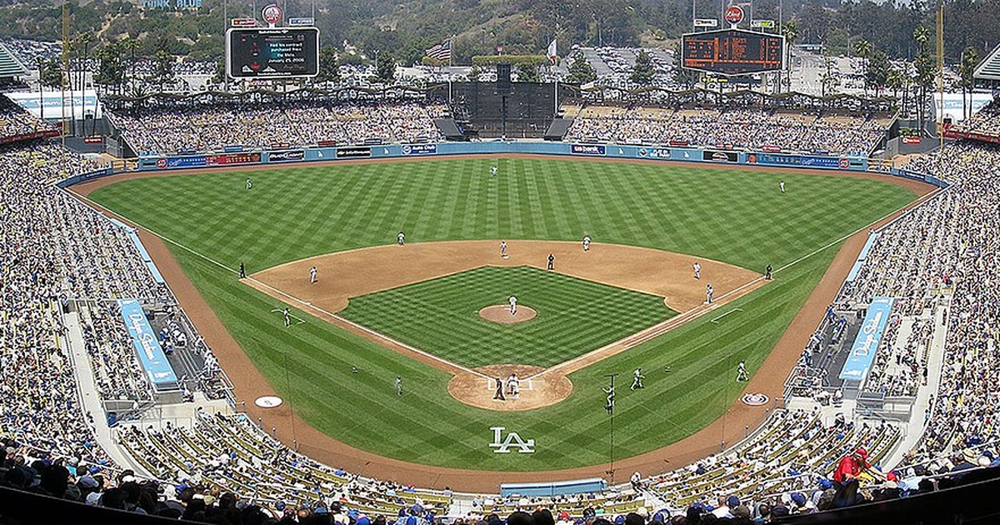

There's a particular kind of pressure that comes with being the new guy. The Texas Rangers roster Jacob inherited was a wreck — 36 players spread across an inactive owner's account for who knows how long, with contracts that had been escalating through the years. Jacob kept four of them, negotiated the rest back into the general player pool, and then did what any first-year owner staring down a blank roster has to do: he went shopping.
What he came home with tells you a lot about what kind of owner he's going to be. Not a rebuilder. Not a tanker. Jacob went out and bought himself a contender — or at least what he hopes is the skeleton of one — and he placed an enormous bet on a 37-year-old arm to carry the whole thing.
Let's talk about Jacob deGrom.
At $31 in salary, deGrom is the single most expensive player on this roster, and by design, the centerpiece of it. That's not a reckless decision on the surface — in 2025, deGrom put up 478 fantasy points across 172 innings, averaging nearly 16 points per game and striking out 185 batters. Those are ace-level numbers. That's what you're paying for. But you are also paying for a 37-year-old pitcher with a documented history of missing time, coming off a season with a former employer that's now listed as his "MLB team." Every owner in this league knows the deGrom story by now. The talent is real. The injury risk is equally real. And at Year 1, $31 is a salary you're locked into.
Jacob deGrom is either the best $31 in this draft or the riskiest. There is no in-between.
The smart move, if you're going to spend $31 on a fragile ace, is to build depth behind him. Jacob did exactly that. Cristopher Sanchez — one of his four keepers — returns at $20 and is the genuine anchor of this staff. Last season, Sanchez put up 567 fantasy points, the fourth-highest total in the league among starting pitchers. He's 29, he's durable (202 innings), and he struck out 212 batters. If deGrom goes down, Sanchez keeps this team afloat.
Beyond those two, Jacob assembled a collection of pitching dart throws that might be the most interesting part of this roster. Cade Cavalli ($10) is the highest-upside arm in the bunch — a 27-year-old with wipeout stuff who threw only 48 innings in 2025 while working his way back from injury. Kyle Harrison ($5) and Max Meyer ($5) are legitimate mid-rotation talents in their mid-twenties who haven't fully arrived yet. Mike Burrows ($2) and Mick Abel ($2) are cheap depth with real ceilings. Johan Oviedo ($2) and Joe Musgrove ($2) round out a rotation depth chart that is aggressive, high-variance, and entirely Year 1.
In Cade Smith, the keeper reliever, Jacob also has one of the better closers in the league at a bargain price. Smith posted 380 fantasy points in relief last year — 16 saves, 104 strikeouts — and costs just $5. That's genuinely excellent roster construction.
Now, the offense. Jacob built his lineup efficiently, concentrating his dollars in a few proven producers rather than spreading them thin. Willy Adames ($17) anchors the infield — he was one of the most productive shortstops in the game in 2025, hitting 30 home runs with 446 fantasy points across 160 games. Matt Chapman ($19) gives Jacob a legitimate bat at the utility spot and hit 21 home runs in 128 games last year. Between the two of them, Jacob has two reliable, high-floor middle-of-the-order pieces.
Matt McLain ($12) at second base adds more youth — he's only 26 and showed real speed-power upside with 15 home runs and 18 stolen bases. Alec Burleson ($5) is a solid first baseman who quietly hit 18 homers. Jordan Beck ($5) gives Jacob a power-speed combination in the outfield. Evan Carter ($5) is the boom-or-bust pick of the position group — he only played 63 games in 2025 but showed 2.60 fantasy points per game when healthy, with legitimate stolen base upside.
Hunter Goodman, the one position player Jacob kept from the TEX roster, is already one of the better catchers in this league at just $2. He posted 406 fantasy points with 31 home runs last year. That's an absolute steal.
The farm system is thin but not empty. Bryce Rainer — a $0 keeper Jacob brought over from TEX — is the headline prospect, ranking among the top 35 prospects in the game. At 20 years old with the Detroit organization, he's a long-term asset that will cost nothing to develop. Xavier Isaac (Tampa Bay, $0) and Owen Murphy (Atlanta, $0) are also legitimate prospects. The rest of the MiLB picks are more speculative, but at $0 each, the risk is essentially zero.
The overarching story of this roster is flexibility. Jacob has $153 committed across 26 players, every contract at Year 1 — which means no salary escalation until next offseason — and $100 in FAAB for in-season moves. In a league where most rosters are weighed down by expensive multi-year contracts, Jacob's team is unusually nimble. He can add aggressively at the deadline, absorb injuries without panic, and shape this roster based on what he learns in the first half of the season.
The question is whether deGrom holds up. If he does, Jacob might genuinely contend in year one. If he doesn't — and history suggests the odds aren't entirely in his favor — Jacob will have spent $31 on a spot start collection and he'll be leaning on Cristopher Sanchez harder than anyone wants. Either way, this is one of the more fascinating new rosters to watch in 2026. Jacob didn't come here to learn the league. He came here to win.